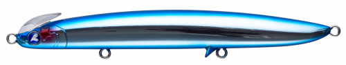
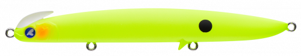
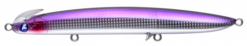
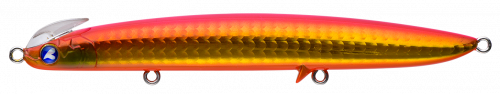

フリッド125S
（Frid125S）
フリッド125S（Frid125S）はBlueBlue（ブルーブルー）のシンキングペンシルです。
サーフのヒラメ・マゴチゲームに特化したフリッドシリーズの最大サイズモデル。業界初のツインリップ構造と後方重心設計で、同クラス最高峰の飛距離とメトロノームのような幅広い横振りアクションを両立させています。

画像出典:BlueBlue公式HP
スペック
- メーカー
- BlueBlue（ブルーブルー）
- タイプ
- シンキングペンシル
- 全長
- 125mm
- 自重
- 37g
- フック
- #5×3
- リング
- #3
- ターゲット
- ヒラメ・マゴチ
- 価格
- 2,145円（税込）〜
- 発売
- 2024年1月
▼今すぐチェック

フリッド125Sの特徴
業界初のツインリップ構造が生む、シンペンの弱点を克服した明確な引き抵抗
-
業界初のツインリップ構造でメトロノームのような横振りアクション
頭部と腹部の2つのリップが生み出す、ゆったりと幅広い横振りアクション。シンキングペンシル特有の「ノー感じ」になりやすい弱点を克服し、引き抵抗を明確に感じられる。
-
後方重心設計で同クラス最高峰の飛距離
重心を後方に配置することで、サーフからの遠投でも安定した飛行姿勢を実現。沖のブレイクやカケアガリまで届かせたい場面で威力を発揮する。
-
高速フォールでボトムタッチが明確
着水後の沈下スピードが速く、ボトムタッチのタイミングが取りやすい。カウントダウンでレンジを刻みやすく、ストップ&ゴーとの相性も良い。
フリッド125Sの使い方
基本はただ巻き。広いポイントや初めて入るサーフでは、スローリトリーブから試してルアーが最適にアクションするスピードを探るのがセオリー。
スローリトリーブ中にストップを挟むストップ&ゴーで、フォールの間に食わせの間を作るのも有効。ロッドワークでテンションを抜いてバックスライドさせれば、狭い範囲でじっくり誘うことも可能です。
フリッド125Sの得意な状況
サーフや河口部でヒラメ・マゴチを広範囲にサーチする状況が最大の出番。
後方重心による飛距離を活かして沖のブレイクまで届かせたい場面や、メタルジグでは食わせきれない場面でのフォロー役としても強い。初めてのポイントで魚の付き場を探るサーチベイトとしても扱いやすい1本です。
ワンポイント
引き抵抗が明確なぶん、巻きすぎるとレンジが浮きやすくなります。着底からのカウントを一定にして、狙ったレンジをキープすることを意識すると反応が安定します。
フリッドシリーズの使い分け
| モデル | 全長／自重 | 得意な場面 |
|---|---|---|
| 90S | 90mm／27g | 通常ウェイトで扱いやすいシリーズの基本モデル |
| 90HS | 90mm／31g | ヘビーウェイト仕様・爆風時や飛距離を入れたい場面 |
| 125S | 125mm／37g | シリーズ最大・最遠投モデル（本記事のモデル） |
フリッドは90S・90HS・125Sの3サイズ展開で、扱いやすさと飛距離・レンジの入れやすさをウェイトとサイズで使い分けられる。125Sはその中でも「飛距離最優先で沖を広く探りたい」場面を担う最大サイズモデルだ。
人気カラー
フリッド125Sは標準12色＋WEB限定4色の全16色展開。サーフでオススメのカラーを厳選して紹介します。

ブルーブルー（#01）ブランドを象徴する定番カラー。クリア潮でのナチュラルアピールに。

マットチャート（#07）濁り潮での視認性抜群な高アピールカラー。

食べごろカタクチ（#09）カタクチイワシパターンにマッチするナチュラル系。

サーフキング（#10）状況を問わず使えるサーフの汎用万能カラー。
画像出典:BlueBlue公式HP
フリッド125Sに似ているルアー
-
 オーバードライブ107S
DAIWA
詳細はこちら＞
オーバードライブ107S
DAIWA
詳細はこちら＞
全長107mm・自重40gの遠投ヘビーシンキングペンシル。飛距離重視で大型ベイトパターンに対応する考え方がフリッド125Sと近い。
-
 ビスタ100S
DUO
詳細はこちら＞
ビスタ100S
DUO
詳細はこちら＞
全長100mm・自重34gのジグミノー。サーフのフラットフィッシュを飛距離とレンジキープで攻略するという狙いどころが共通する。
-
 ネッサ ウィングビーム80HS
シマノ
詳細はこちら＞
ネッサ ウィングビーム80HS
シマノ
詳細はこちら＞
全長80mm・自重35gのヘビーシンキングタイプ。コンパクトながら飛距離を稼げる設計で、サーフのロングキャスト勝負という点で選択肢が重なる。